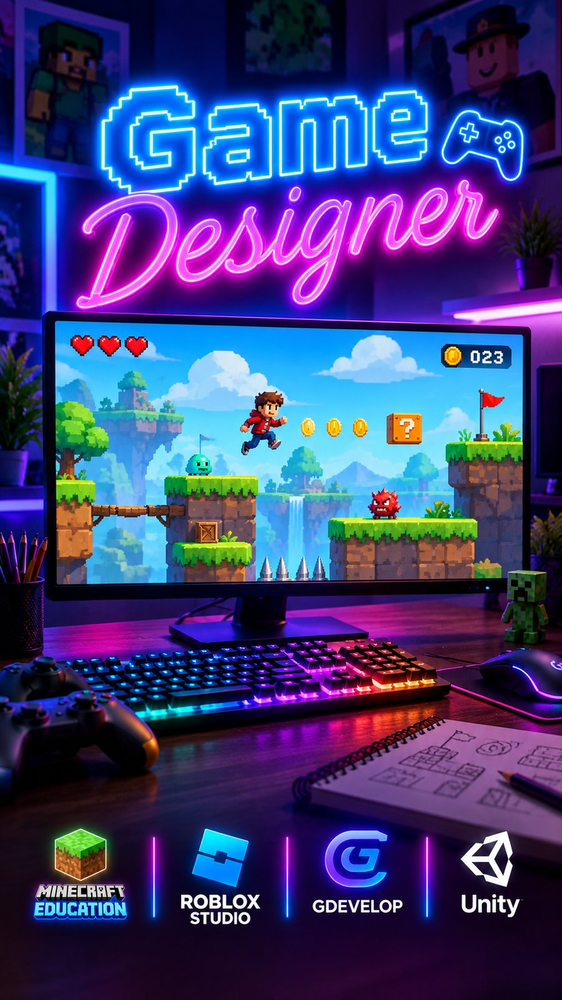
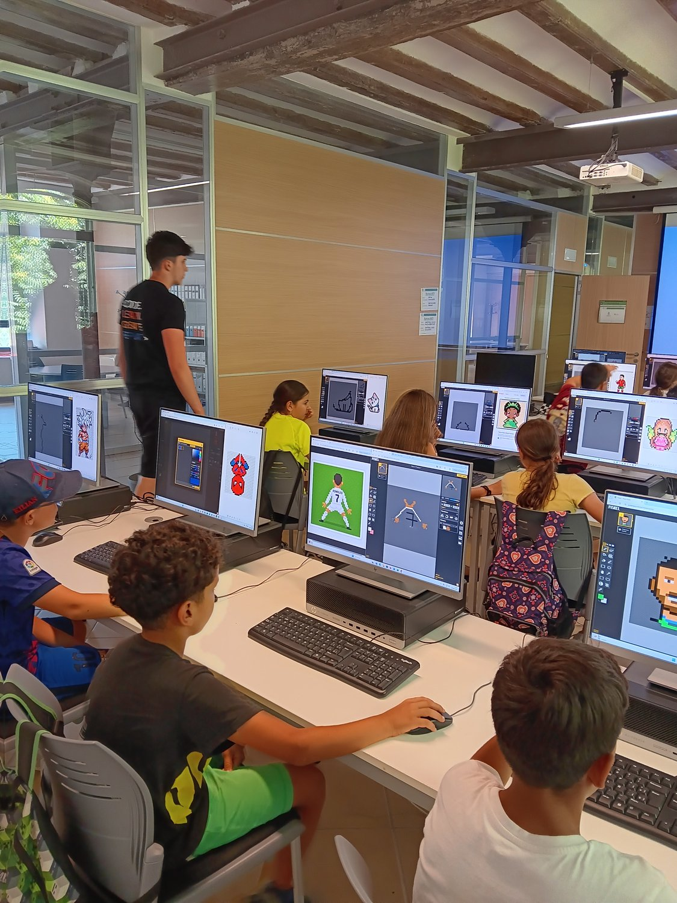
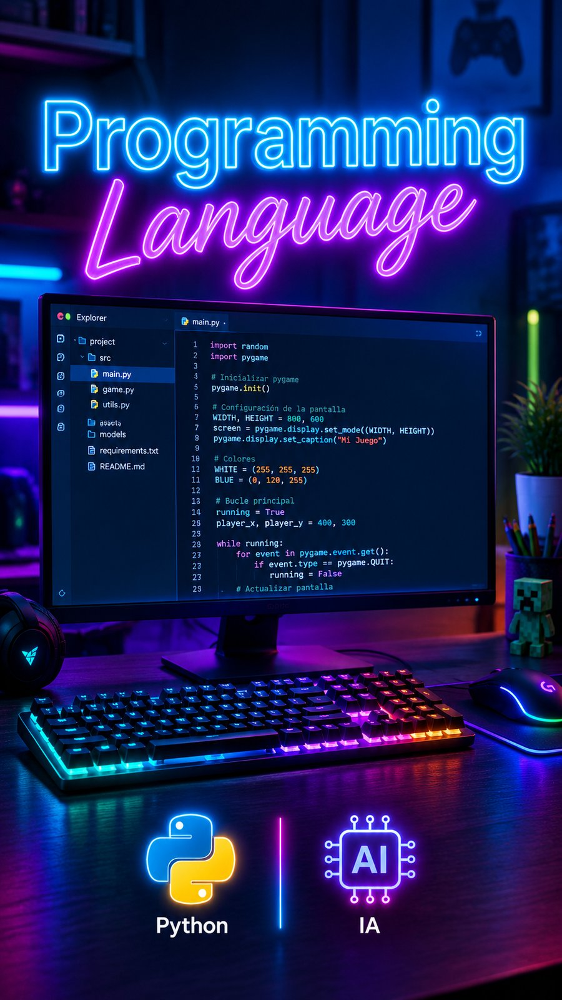
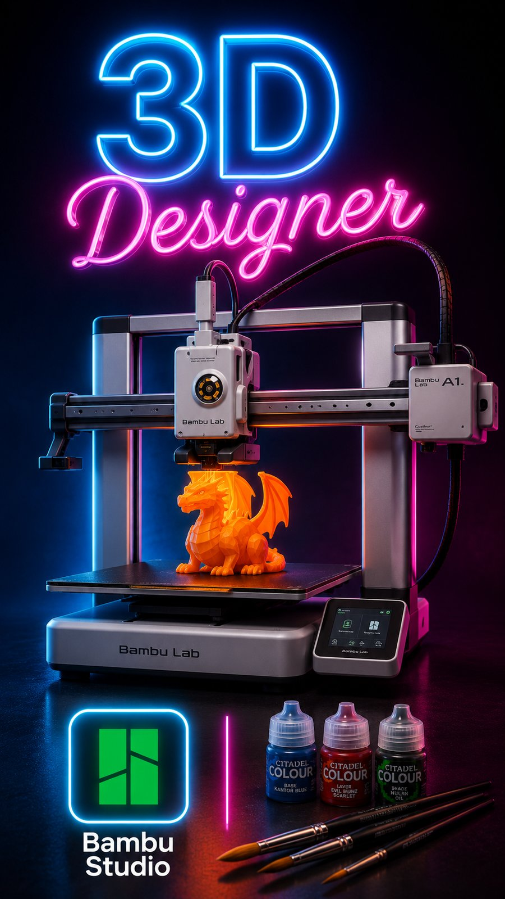

Creación de videojuegos
Diseñan sus propios videojuegos, niveles y personajes, con herramientas adaptadas a cada edad.
Más información →Vilafranca del Penedès · de 6 a 16 años
Programación, videojuegos, diseño e impresión 3D y creación de contenido en una misma academia. Clases presenciales en Vilafranca y online en directo para niños y niñas de 6 a 16 años, con grupos reducidos y la primera clase gratuita.

Nuestras clases son una actividad extraescolar en la que los niños y jóvenes aprenden tecnología haciendo proyectos propios: un videojuego, una pieza en 3D, un programa o un vídeo. No son fichas ni ejercicios a medias.
Los grupos son reducidos y se organizan por franja de edad, con un mentor cerca de cada pantalla. No hace falta experiencia previa ni comprar material.
Las familias pueden elegir clases presenciales en Vilafranca del Penedès u online en directo.
Elige el área que más les motiva o combínalas.

Diseñan sus propios videojuegos, niveles y personajes, con herramientas adaptadas a cada edad.
Más información →
Pasan de los bloques al código real, con lenguajes como Python, y entienden cómo funciona la tecnología.
Más información →
Diseñan modelos en 3D, experimentan con sus ideas y aprenden cómo transformar un diseño digital en una pieza real.
Más información →Descubren la inteligencia artificial y crean contenido digital con herramientas que ya forman parte de su día a día.
Más información →Cada etapa refuerza la anterior y abre una nueva. Los alumnos se incorporan a la franja que les corresponde y avanzan a su ritmo.
Pensamiento computacional, programación por bloques y primeras formas sencillas en 3D. Se trabaja jugando, en grupos muy reducidos.
Scratch avanzado, primeros videojuegos propios en Minecraft Education o Roblox Studio y modelado 3D listo para imprimir.
Python, diseño 3D más técnico y videojuegos con motores gráficos completos como Unity.
Proyectos propios de entidad, portfolio personal y orientación hacia bachillerato tecnológico o ciclos formativos.
Elige la modalidad que mejor se adapte a la familia.
Clases presenciales en Pixel Penedès, en Vilafranca del Penedès.
Clases online en directo, con profesorado e interacción real. No son clases grabadas.
Rellena el formulario de esta página o escríbenos por WhatsApp.
Te contactamos en menos de 24-48 horas laborables para confirmar día y grupo.
Con el grupo que les corresponde por edad y sin ningún compromiso de continuidad.
Clases en las que los niños y jóvenes aprenden programación, videojuegos, diseño e impresión 3D y creación de contenido haciendo proyectos propios, en grupos reducidos por edades.
De 6 a 16 años. Los grupos se organizan por franja de edad (6–8, 9–11, 12–14 y 15–16 años).
Sí. Además de las clases presenciales en Vilafranca del Penedès, ofrecemos clases online en directo por Zoom, con un profesor en directo (no vídeos grabados) y en grupos reducidos, con exactamente el mismo seguimiento que en la academia.
Grupos reducidos organizados por franja de edad (6–8, 9–11, 12–14 y 15–16 años), para que el ritmo de cada sesión tenga sentido para todos.
Hacemos las clases en nuestro espacio de la calle Puigmoltó, 5, en Vilafranca del Penedès. Los horarios se organizan por grupos: escríbenos por WhatsApp o correo y te confirmamos la disponibilidad actual.
No, en absoluto. La mayoría de alumnos empiezan sin ninguna experiencia previa. Cada grupo se adapta al nivel real de los niños y niñas que lo forman, no a un temario fijo.
Nada que tenga que comprar por adelantado. En la academia disponemos del hardware y el software necesario, incluidas las impresoras 3D. Solo hace falta que venga con ganas de probar cosas.
Una sesión real, con el grupo que le correspondería por edad, para que el niño o la niña la viva tal como será después. Sin ningún compromiso de continuidad.
Rellenando el formulario de esta página o escribiéndonos directamente por WhatsApp. Te contactamos para confirmar día y grupo en menos de 24-48 horas laborables.
Cuéntanos un poco sobre el niño o la niña y te confirmamos día y grupo. Sin compromiso, sin letra pequeña.